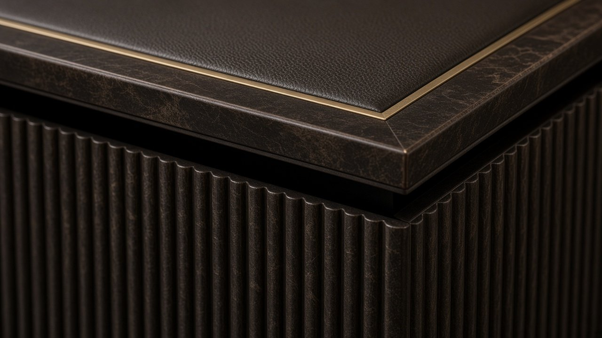
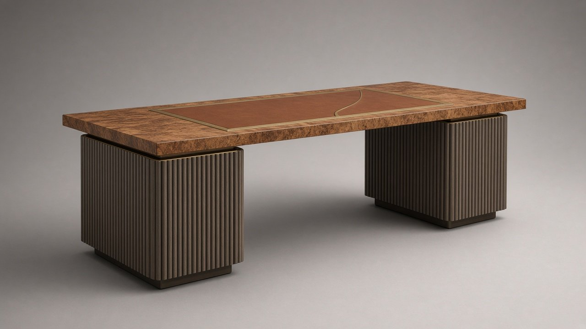

x.classList.remove('on'));this.classList.add('on')">
x.classList.remove('on'));this.classList.add('on')">← Coleção
N.º 02 · Coleção Meridiano
DOURO
Secretária de direção
Simetria de direção: tampo em raiz de nogueira sobre dois pedestais canelados de carvalho fumado.
Preço desde 22.000 €sem IVA · valor indicativo · versões por medida sob consulta
Descarregar ficha técnica (PDF)
Dimensões
| L × P × A | 2600 × 1000 × 750 mm |
| Superfície de escrita | 1300 × 560 mm |
| Altura útil | 710 mm |
Materiais
| Tampo | Raiz de nogueira |
| Pele | Plena flor semi-anilina Conhaque |
| Pedestal | Carvalho fumado canelado |
| Pedestal | Carvalho fumado canelado |
| Metais | Latão e bronze escovados |